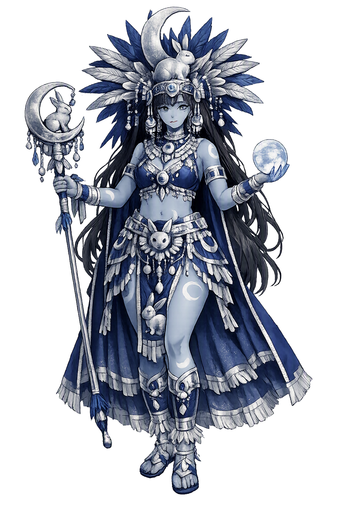

Stories of Metztli
The stories told of the Nahua moon are stories about light that must be limited: a twin who shines too bright and is struck by a rabbit, a sister dismembered at the serpent mountain, and a calm disk that keeps the months. The sources disagree about names — Tecciztecatl, Coyolxauhqui, Metztli herself — and the disagreement is the theology: one moon, many meanings.
At the dawn of the fifth era the gods assembled at Teotihuacan, and darkness still covered the world. Two volunteers offered themselves to become the lights. Nanahuatzin, the pustule-covered, leapt first into the sacred fire without hesitation; Tecciztecatl, the proud and bejewelled, flinched four times before at last following. The Codex Chimalpopoca's Leyenda de los Soles tells what happened: the humble one rose as the sun, and the splendid one rose as the moon, shining as bright as the day. The gods would not endure two equal lights. One of them seized a rabbit and hurled it into Tecciztecatl's face, dimming his splendour and fixing the dark silhouette on his disk. Sahagún's informants repeat the tale in the Florentine Codex (Book VII), where the moon's brightness is cut back precisely because the world needs contrast — day to work, night to fear and dream. The rabbit flew, the moon dimmed, and the celestial order was set. The myth means that in the Nahua cosmos even glory must accept a wound to become useful: the moon is what remains when a radiant rival is struck down to size.
On the serpent mountain of Coatepec, Coatlicue was sweeping when a ball of feathers descended upon her; she conceived, and her four hundred sons, led by Coyolxauhqui — 'She of the Golden Bells' — raged at the shame. As she attacked her mother, Huitzilopochtli sprang fully armed from Coatlicue's womb and cut his sister to pieces, hurling her head into the sky. The Leyenda de los Soles and the Florentine Codex (Book III) agree on the essentials, and the Coyolxauhqui Stone, excavated at the Templo Mayor in 1978, shows her broken body with bells on her cheeks — a moon dismembered by a sun. Scholars caution that the sources never simply call Coyolxauhqui 'Metztli'; rather, Nahua thought distributes the moon among several names. For the city that kept the sun's temple, the myth was political theology: the moon's light is the light of a defeated enemy, hung in the sky as a permanent warning. The myth means the moon is remembered violence — the night ruled by what the day dismembered.
The honest difficulty of Nahua lunar theology is that the colonial sources disagree. Sahagún gives Tecciztecatl the leap into the fire; the Coatepec myth gives Coyolxauhqui the dismembered head; the day-counts and ritual orations preserve Metztli simply as the moon and the month; and the night is ruled by Yohualtecuhtli, 'Lord of Night,' often shown with the lunar disk on his back. Seler's comparative studies treated these as overlapping masks of a single lunar complex, while Nicholson's survey of central Mexican religion lists them as distinct personalities the Mexica themselves never systematized into one lunar theology. The Mexica, it seems, did not feel the need for one moon. What unites the names is function: the moon counts the month, so whoever wears the disk is time's registrar. The mythological lesson is that a culture can hold several contradictory stories about the same light without anxiety — the moon as rival, as dimmed twin, as calendar — because what matters is not the name but the counting.
Closely woven into the lunar sphere is Temazcalteci, 'Grandmother of the Sweatbath,' whom Sahagún's informants praise in the Florentine Codex (Book VI) as patroness of the temazcal, of medicinal herbs, and of women in childbirth — a goddess whose steam, like the moon's, is a vapour that heals. The sweatbath was a sacred precinct served by midwives and its own deity, and later scholarship from Seler onward has linked the bathhouse, with its night hours, its water, and its female arts, to the wider lunar world to which Metztli gives her name. The connection should be stated carefully: no colonial text calls Temazcalteci 'Metztli'. But the logic of the pairing is old — moon, water, steam, and the arts of healing travel together across Mesoamerica, and the Maya codices give their moon goddess Ix Chel the same portfolio of weaving and medicine. The myth means that the moon's domain is not only the sky: it is the bath, the womb, the herb, and the hour that counts the labor of birth.
Moon
Metztli is the Nahuatl moon — the word means both 'moon' and 'month,' so she is the sky's registrar of time. Colonial sources give the moon several faces: the dimmed twin Tecciztecatl, the dismembered Coyolxauhqui, and Metztli herself, the calm counting presence over night, calendar, and the moist arts of healing.
The Nahuatl word names the moon and the month at once — the sky's light and the calendar's unit in a single breath.
The lunar disk governed the eighteen festival months of the veintena year and the night's vigil alike.
Kept alive in Nahuatl speech, the temazcal sweatbath, and the rabbit the whole world can still see on the moon's face.
Held as a Unicode domain temple so the moon's name keeps its scholarly form rather than a compromise.
From the original script to the living URL
Metztli
The name survives in scholarly transliteration. Metztli is the standard Nahuatl romanisation, documented in academic sources — “Moon”. Because the spelling uses only Latin letters, the form is the same in both ASCII and Unicode.
No indigenous writing system is securely attested for individual nahuatl names. The form shown is a modern scholarly transliteration.
metztli
The plain metztli form is identical to the Unicode restoration. Because this name is already written in Latin letters, no diacritics, stress, or script information were lost — only capitalization differs.
Metztli
The Unicode restoration does not need to recover lost marks for Metztli. Its value is canonical spelling and consistent cataloguing, not the reconstruction of erased orthography. The domain is readable as-is to both DNS and humanity.
Metztli.com
This restoration is written entirely in ASCII letters — no Punycode encoding stands between Metztli and the DNS. The domain reads identically to machines and to human eyes.
Owned, ideal, and ASCII forms of Metztli
Metztli
The full Unicode restoration. metztli.com is not in the PuniCodex collection — it is watched for release; if it drops, this temple upgrades to an owned flagship.
How Metztli was spoken
How Metztli is preserved in writing
No indigenous writing system is securely attested for individual nahuatl names. The form shown is a modern scholarly transliteration.
Contribute scholarly provenance →Metztli's deepest lesson is lodged in grammar. In Nahuatl the same word names the light in the sky and the interval it measures — moon is month. The Mexica did not divide the luminous object from the time it kept; the watcher and the clock were one being. That is a more intimate astronomy than ours. We have inherited a moon that has been weighed, mapped, and walked upon, and in exchange we have mostly lost the older moon — the one that told farmers when to plant, healers when to steam, and midwives when the month had turned.
Enter Extended Lore